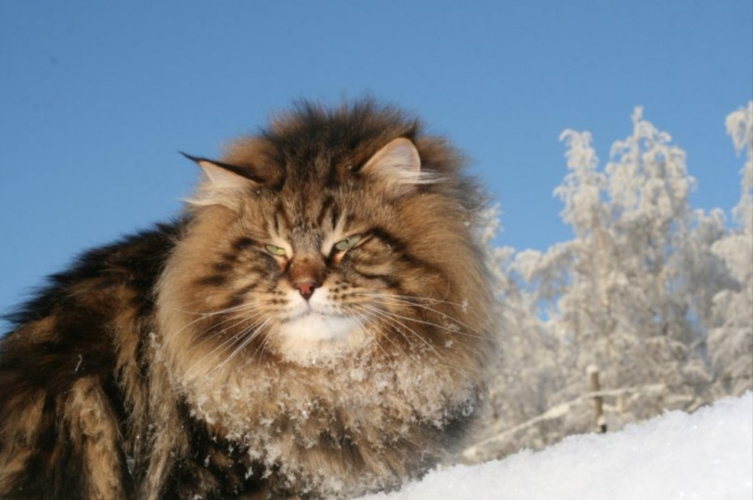
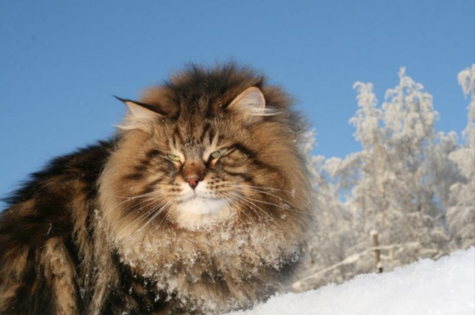
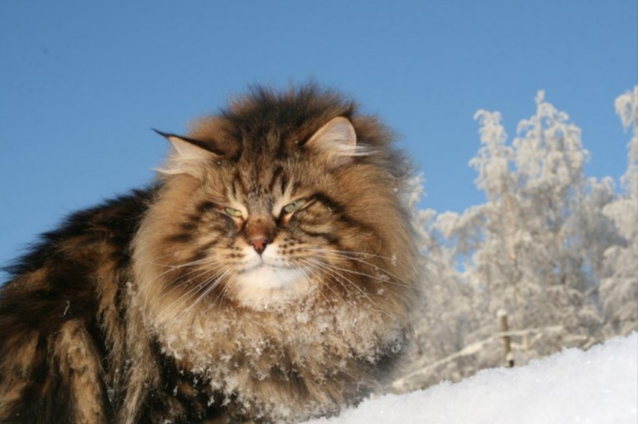

Кот
Друг
Выбор
Вид
Кот
Шерсть
ЕСЛИ ГРОМКО КОТ УРЧИТ!
Повсеместно известно, что урчание кота, благоприятно влияет на сердце. Тембр самого урчания, попадает в резонанс c сердцеебиения, тем самым успокаивая и замедляя его, при стрессовых ситациях.
 
